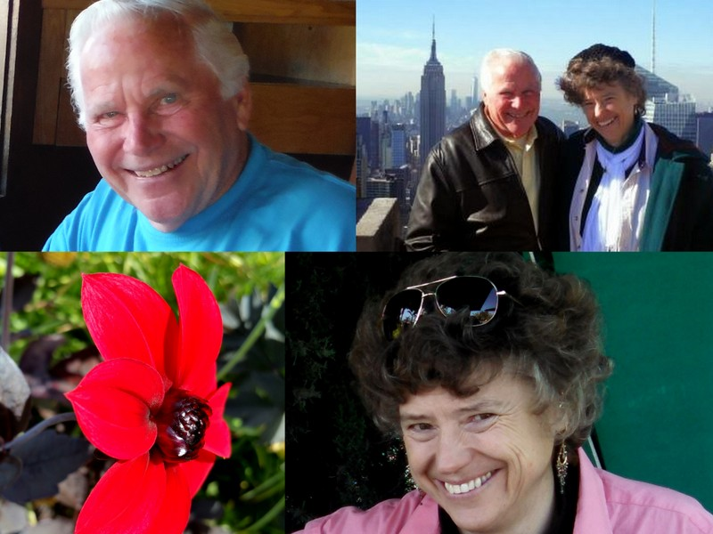
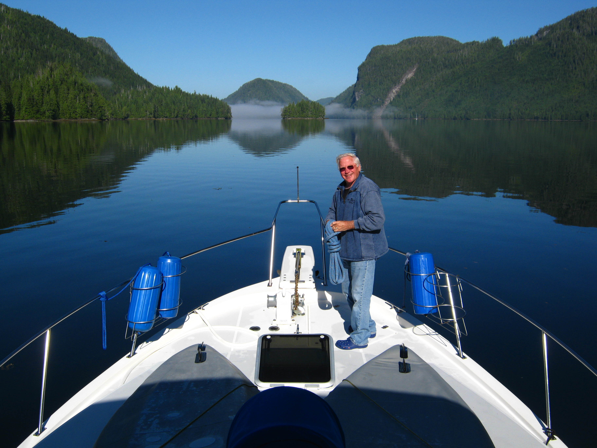
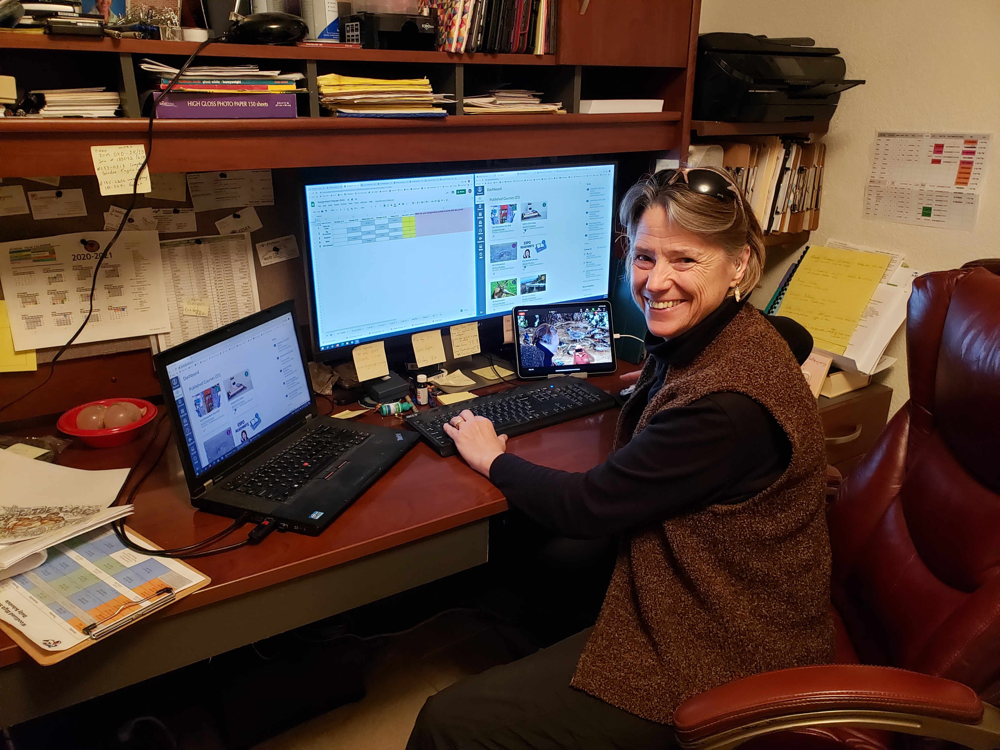
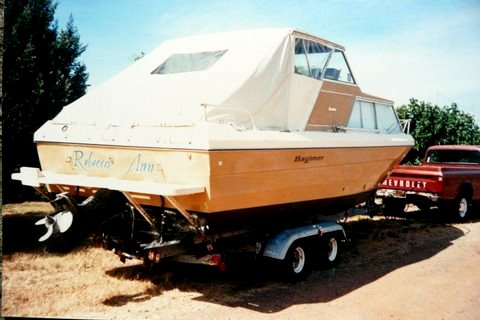
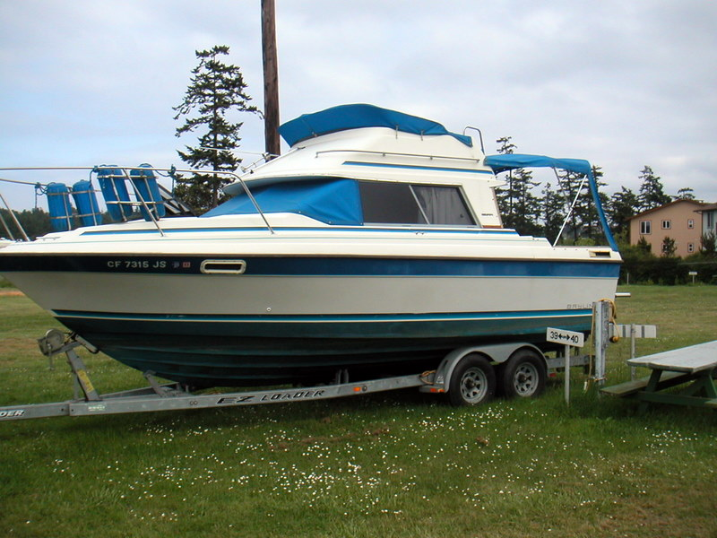
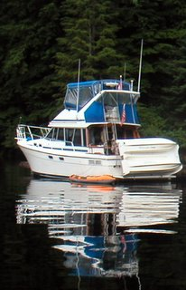
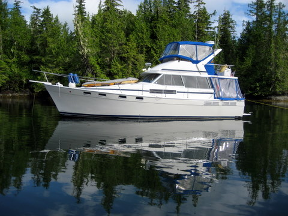

Favorite Links
BillPratt.com
Sierra College
Woodland High School
Woodland Chamber Singers
Services
Larsson Marine
Marine Covers and Enclosures
- In Canvas
Marinas to stop and visit
Lagoon Cove Marina
Sullivan Bay Marina
Blind Channel Resort
Informational websites
Pat's Boating in Canada
National Data Buoy Center
BC Marine Weather
Rockfish Conservation Areas
U. S. Customs and Border Protection
WiFi on your boat made simple!
- Land & Sea WiFi
Master Gardener Yolo County

J & R relaxing
John
John is a retired Automotive Technician, and high school Automotive Technology Instructor for high school and college.  After many years working in the automotive industrial field, John decided to apply his knowledge in a new challenge, obtaining a lifetime Automotive teaching credential. He then finished out his career as an automotive instructor at Placer High School in Auburn, California; teaching for 20 years. During this time period, the Placer County won the honors of being judged as the best Automotive Program in the United States. At the same time that John was teaching fulltime at Placer High School, he also worked part-time at Sierra College, teaching an AT 59 Auto Tech class, in Rocklin, California (which he has since retired). Meanwhile, John continues use his field of knowledge for keeping the twin diesel Hinos running smoothly on the 38' Bayliner, along with the upkeep of the 20 HP on the dinghy and the onboard Genset. He is also busy being Gpa.
Rebecca
Rebecca is unoffically known as Gma Becca. She holds a Masters of Arts in Education, along with her K-12 Multiple Subject Teaching Credential, Specialist Instruction Credential in Special Education, Crosscultural, Language and Academic Development Certificate and Resource Specialist Authorization. She has taught at Woodland High since 1994, as an Education Specialist. In 1984, her first teaching assignment involved teaching grades K through 12 in a small, one room, school in Alkali Lake, Oregon. Rebecca became a Master Gardener May 5, 2005. Knowledge and skills in landscaping, were also used in developing new classes, along with learning strategies for her students. January 2012, Rebecca joined the Woodland Chamber Singers (WCS), as a second soprano. She gave her first public performance signing the song, "In This Ancient House", for the Spring 2012 Celebration. In March 2014, she traveled to New York, with the WCS. Starting April 13, 2020, due to the Covid-19 restrictions, Rebecca returned to teaching from home, this time via online Zoom meeting.  She finished up her last year of teaching for the 2020-2021 school year, from home! What a way to start and finish her teaching career. As of 6-11-2021, she has officially retired from teaching. New travels coming.


John and Rebecca...
first met on the morning of June 19th, 1985, on the Alaska Marine Highway ferry 'Malaspina' while cruising the inland passage to Sitka. John was traveling with his brother Bill while Rebecca was moving from Petersburg, to Sitka, with her sister Terry. (We won't identify younger and older!) John and Rebecca were married one year later, on the "Far East Cruise" compliments of the Sacramento Yacht Club, in Stockton, California; taking their honeymoon summer crusise on the Sacramento River including the Delta area. The following summer they headed north to Port Townsend, WA including the San Juan Islands, and have never looked back! Summertime now is spent cruising in Canadian waters that include the Broughton Archipelago. 


{kind=link}